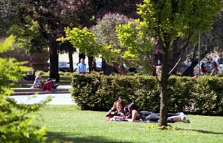

Приезд. Возвращение крышечки. Перепиленная дужка замка. Городские парки.
Каждый раз приезжая в Таллинн, я жду от своего рижского мобильного оператора смс с текстом: «Чувствуй себя в Эстонии, как дома! Выбери EMT бла-бла-бла..». На этот раз я получил эту смс-ку, ещё не успев приехать на таллиннский автовокзал. Прочитал, посмотрел в окно автобуса — и правда! Я словно дома. Красивый город, солнышко, силуэты портовых кранов, чайки всякие летают, люди всюду ходят. И настроение сразу очень и очень хорошее.
А главное настроение Таллинна — это, конечно же, Ленка. Она встретила меня на автовокзале в пол девятого утра и всё своё свободное до работы время посвятила мне. А посвятить утро — она ух как умеет. Кофе и завтрак дома после дороги это уже само собой разумеещееся. Так она меня ещё и на море отвела. Кормить лебедей лавашом. Лаваш мы, конечно же, съели сами. А вот на побережье Ленка нашла монетку в одну крону (это вообще уже стало традицией, что в каждом моём последнем приезде, кто-то из нас находит монетку в одну крону — получается что каждая двухсотая поездка в Таллинн бесплатна!). Но была ещё и крышечка!
В лирическом отсуплении я вам расскажу грустную историю, о том что было у меня три обьектива для моего canon. И год назад, в какой-то поездке по Латвии я потерял крышечку от одного из них. И не нашёл. С тех пор у меня крышечек было ровно на одну меньше, чем обьективов. С одной стороны — я слишком безответсвенный, чтобы собраться в магазин и купить её, а с другой — такая же крышечка у меня оставалась на китовом обьективе, который мне нафик не нужен и пусть лежит себе в пакетике без крышечки, пожертвовав её несчастному телевику.
И вот крышечка! Не успела Ленка найти кроновую монетку, как я там же, на каменистом берегу моря, нашёл крышечку от объектива canon.. 58 милиметров.. то самое, что и было потеряно когда-то в Латвии.
На этой счастливой ноте, Ленка убежала на работу. Оставшись один, я занялся тем, что и собирался делать приезжая — фотографировать. Гулял по старому и новому городу, пол дня провёл на морском берегу кадриорга, валялся потом там же в одуванчиках, слушая шум волн. Я даже больше просто насалаждался хорошим настроением, нежели фотографировал.
Солнечный, весёлый, добрый город у моря.
Здесь не может быть плохого настроения.
В Кадриорге, на берегу моря есть «Русалка» — красивый памятник кораблю, затонувшем в конце позапрошлого века. (Памятник меня настолько впечатлил, что я его даже сфотографировал, хотя раньше не увлекался подобным жанром). И там, на якорных цепях памятника висят замочки молодожёнов. Меня особенно впечатлил один из них — старый, тяжёлый, с грубо нацарапанными инициалами «И+К». Дужка этого замка была перепилена. Полностью (чуть больше сантиметра в диаметре). А сам замок всё ещё висел на цепях..
«Русалка»
Гуляя в тот день по городу, я сел отдохнуть в парке у гостиницы «Viru». Посидел и начал вдруг чувствовать, что что-то не так. Огляделся вокруг и понял, что именно — в этом парке посреди города люди сидели на траве. Шумные компании, парочки, пожилые люди... На краю парка кто-то даже в футбольчик играл!
Я был в шоке. У нас в Риге, запретили сидеть на траве городских парков настолько давно, что я уже забыл что это такое — вспоминаются только какие-то смутные студенческие годы. А здесь — нате вам! Солнышко светит, травка зелёная, рядом киоск с газетами и попить-перекусить. И опять же — футбольчик!!! (Я бросился было к парням напрашиваться, но они, к моему сожалению, закончили играть и разошлись)
В общем я там полтора-два часа сам валялся на этой траве. Удовольствие — обалденное. Рядом ещё музыка живая играла из ближайшего уличного кафе. Солнышко. Молодёж какая-то беситься (И это совсем не раздражает, а совсем наоборот. Поскольку атмосфера такая). А в один момент меня вдруг пробило на томные мысли: я сидел и проклинал тех, кто творит законы в Риге. Чесслово, я чуть не плакал от досады, что вот нас лишают такого огромного удовольствия из-за каких-то глупых домыслов. Суки.
А здесь, в парке на траве, под солнышком — благодать! Этот парк настолько мной полюбился, что за оба дня заходил сюда отдохнуть от прогулок с десяток раз.

шахматишки!
Поэтому неудивительно, что следующим днём, именно здесь я и встретил фею…